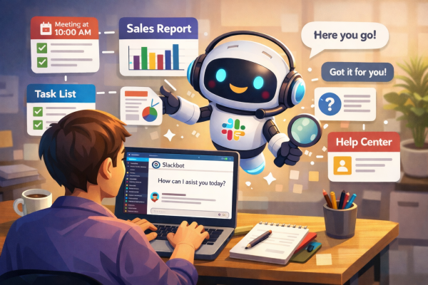
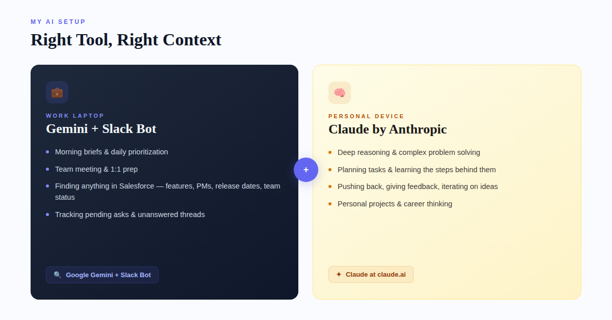

If you're in pre-sales, especially at a company like Salesforce, your days are a blur. Morning briefs, team syncs, 1:1s, deal reviews, Slack threads that never end, and somewhere in between all of that, you're supposed to actually sell. The problem was never the selling. It was everything around it that ate my time alive.
About a year or so ago, I started experimenting with AI tools. Tried ChatGPT, Claude, Gemini, Grok, played around with a few others. What I landed on was a split setup: Google Gemini and the Slackbot on my work laptop for anything Salesforce-related, and Claude on my personal device for everything else. Each one earns its spot for different reasons, and having the right tool for the right context has been the real unlock.
But here's the thing: I'm probably not using any of them the way you'd expect.
I don't use AI for client research
Let me get that out of the way early because I know that's what most "AI for Sales" articles talk about. That's not my workflow.
Where AI changed the game for me is in the daily operational stuff that nobody writes LinkedIn posts about, but that quietly eats hours out of your week if you let it.
Morning briefs and daily planning
Every morning, I use Gemini to help me build my daily brief. What's on my plate today? What meetings do I have and what should I be prepared to discuss in each one? Are there open items from yesterday that I didn't close out? What's the priority stack for this week and am I actually tracking against it?
It sounds simple, but having an AI that helps me prioritize and prompts me to remember things I need to bring up in my 1:1s, in team meetings, in deal reviews, that's been massive. Before, I'd walk into a Monday morning standup and realize halfway through that I forgot to follow up on something from Thursday. Now I don't. Gemini helps me stay on top of the small stuff so I can focus on the big stuff.
Planning team meetings and 1:1s
This one might sound minor, but it's probably saved me the most mental energy. Before every 1:1, I ask Gemini to help me think through what's important to cover with that specific person. What are they working on? What did we talk about last time? Are there any coaching moments I should address? Any wins I should recognize?
For team meetings, same idea. What does the team need to hear this week? What are the priorities we need to align on? Are there blockers I should surface? It's not writing an agenda for me, it's thinking through the agenda with me. There's a difference.
The Slackbot changed everything
If you work at a large company, you know the pain of trying to find information buried across hundreds of Slack channels and internal tools. This has been a huge unlock for me.
I use the Slackbot to find anything within Salesforce, and I mean anything. Quick example: "Is this feature available in Data360? If not, when is it planned for? If yes, what's the release date, who's the PM, and who are the team members I can reach out to?" Getting that answer used to mean pinging three different people and waiting half a day. Now I get it in seconds.
Or something like: "What is my team currently working on this week? Are there any pending asks in our team channels where someone hasn't responded yet?" That kind of visibility used to require me to scroll through a dozen threads. Now I just ask.
I don't type anymore
Seriously. Shout out to Wispr Flow (no, I'm not paid by them) and Google Recordings. Between voice-to-text and AI, I barely touch my keyboard for first drafts of anything. I talk through my thoughts, the transcription captures it, and then AI helps me organize it into something structured. It's faster, it's more natural, and honestly, I think better out loud than I do staring at a blinking cursor anyway.
Here's what I don't use AI for
I'm not using it to rewrite emails in a "more professional tone." I'm not generating images. I'm not asking it to make my Slack messages sound friendlier. That stuff feels like a parlor trick to me.
What I am doing is using AI to plan, to think, and to learn.
Here's what I mean by that. When I have a complex task, something I haven't done before or something I want to do more efficiently, I don't just ask AI to do it for me. I ask it to plan the task, walk me through the steps, and teach me the reasoning behind each step. Why did you approach it this way? What would happen if we changed this variable? What am I missing?
This was the big unlock for me.
This is where Claude on my personal device has become invaluable. For anything that requires deep reasoning: thinking through a difficult conversation, working through a personal project, Claude is my go-to. The way it reasons through complex prompts and engages with pushback is different from anything else I've tried.
And that's the key: I push back. I give it feedback. I tell it where I disagree or where the output doesn't match reality. Claude gets better when you do that. The conversation sharpens.
The people who will win with AI aren't the ones using it to write faster. They're the ones using it to think better.
If you're in pre-sales or any customer-facing role and you haven't tried building AI into your daily workflow, not for the flashy stuff, but for the boring operational stuff that actually runs your week, give it a shot. Try Gemini if you're in a Google workspace. Try Claude at claude.ai for the thinking and reasoning stuff. Try any AI. Find what works for your context.
Tell it to plan something for you. Then ask it to explain its reasoning. Then push back and give it feedback.
You'll be amazed at what happens.
That's what I've been doing. Are you?